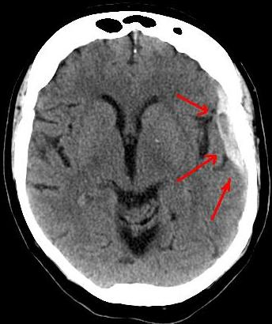

Ficha del catálogo
Hematoma subdural
- Sistema
- Nervioso
- Modalidad
- TC
- Región
- Espacio subdural, convexidad craneal
- Dificultad
- Básico
El hematoma subdural es la colección de sangre entre la duramadre y la aracnoides, habitualmente por rotura de venas puente tras un traumatismo. Es especialmente frecuente en pacientes de edad avanzada, con atrofia cerebral o bajo tratamiento anticoagulante. El traumatismo puede ser mínimo o no recordarse, sobre todo en las formas crónicas.
Técnica
Tomografía de cráneo sin contraste con reconstrucciones en ventana de parénquima, ventana ampliada para colecciones y ventana ósea. La resonancia se reserva para colecciones isodensas, bilaterales o de cronología dudosa.
Qué observar
- Colección en semiluna que sigue la convexidad y cruza las suturas
- Extensión a lo largo de la hoz o del tentorio
- Densidad de la colección para estimar su antigüedad
- Niveles de sedimentación o componentes de distinta densidad por resangrado
- Borramiento de surcos y desviación de la línea media
- Signos de herniación y compromiso de cisternas basales
Hallazgos
Colección extraaxial en forma de semiluna, cóncava hacia el parénquima, que se extiende ampliamente por la convexidad y cruza las líneas de sutura sin atravesar los repliegues durales. En fase aguda es hiperdensa, en fase subaguda se vuelve isodensa respecto a la corteza y en fase crónica es hipodensa. La forma crónica puede mostrar membranas, tabiques y áreas hiperdensas por resangrado.
Perlas
El hematoma subdural isodenso es el gran punto ciego de la tomografía: Se sospecha por borramiento de surcos, desplazamiento de la interfaz entre sustancia gris y blanca y asimetría ventricular, más que por la propia colección. En casos bilaterales, la ausencia de desviación de línea media puede enmascarar una compresión importante.
Diagnóstico diferencial
- Hematoma epidural
- Forma biconvexa, limitado por las suturas, con frecuencia asociado a fractura y de origen arterial.
- Higroma subdural
- Colección de densidad similar al líquido cefalorraquídeo, sin membranas ni componentes hemáticos, tras traumatismo o descompresión.
- Atrofia con espacios subaracnoideos amplios
- Se ven vasos corticales cruzando el espacio y los surcos permanecen visibles hasta la tabla interna.
- Empiema subdural
- Restricción marcada a la difusión, realce de la membrana y contexto infeccioso con foco sinusal u ótico.
Simuladores
- Artefacto de endurecimiento del haz junto a la tabla interna
- Espacio subaracnoideo prominente en el paciente atrófico
- Engrosamiento dural difuso por hipotensión intracraneal
Por modalidad
- TC
- Es la exploración inicial: Define la extensión, la densidad, el efecto de masa y la necesidad de drenaje urgente.
- RM
- Supera a la tomografía en colecciones isodensas y pequeñas, y permite datar mejor la hemorragia y detectar membranas.
Protocolo
Adquisición helicoidal de cráneo sin contraste con cortes finos y revisión obligatoria en ventana intermedia amplia, que aumenta la detección de colecciones isodensas respecto a la ventana de parénquima estándar.
Clasificación
Se clasifica por cronología en agudo, subagudo y crónico, con correlato en la densidad tomográfica. Las decisiones quirúrgicas se apoyan en el grosor máximo de la colección, la desviación de línea media y el estado neurológico.
Errores frecuentes
- No usar ventana ancha y pasar por alto una colección isodensa
- Interpretar como atrofia una colección crónica bilateral
- Confundir el patrón en semiluna con la forma biconvexa del hematoma epidural

hematoma subdural venas puente colección en semiluna traumatismo craneal isodenso tomografía de cráneo